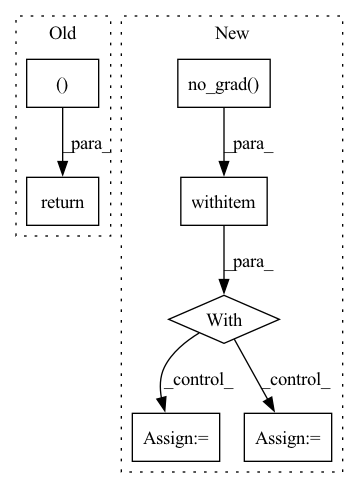

Pattern ID :15094
Before Change
) / 2
// ------- classification loss -------
logits = torch.cat((logits1, logits2 ))
target = target.repeat(2)
class_loss = F.cross_entropy(logits, target, ignore_index=-1)
// just add together the losses to do only one backward()
// we have stop gradients on the output y of the model
loss = nce_loss + class_loss
// ------- update queue -------
keys = torch.stack((gather(k1), gather(k2)))
self._dequeue_and_enqueue(keys)
// ------- metrics -------
acc1, acc5 = accuracy_at_k(logits, target, top_k=(1, 5))
metrics = {
"train_nce_loss": nce_loss,
"train_class_loss": class_loss,
"train_acc1": acc1,
"train_acc5": acc5,
}
self.log_dict(metrics, on_epoch=True, sync_dist=True)
return loss
def on_train_batch_end(self, outputs, batch, batch_idx, dataloader_idx):
// log tau momentumAfter Change
q1 = F.normalize(q1)
q2 = F.normalize(q2)
with torch.no_grad() :
k1 = self.momentum_projector(feats1_momentum)
k2 = self.momentum_projector(feats2_momentum)
k1 = F.normalize(k1)
k2 = F.normalize(k2)
// ------- contrastive loss -------
// symmetricIn pattern: SUPERPATTERN
Frequency: 3
Non-data size: 7
Instances Fragment ID: 50993634
Project Name: vturrisi/contrastive-learning
Commit Name: a47bb52eeeb836a919c105a9dcd27930c9124ec4
Time: 2021-06-14
Author: vt.turrisi@gmail.com
File Name: solo/methods/mocov2plus.py
M Class Name: MoCoV2Plus
N Class Name: MoCoV2Plus
M Method Name: training_step(3)
N Method Name: training_step(3)
M Parent Class: BaseMomentumModel
N Parent Class: BaseModel
M File Name: solo/methods/mocov2plus.py
N File Name: solo/methods/mocov2plus.py
M Start Line: 107
M End Line: 152
N Start Line: 82
N End Line: 112
Before Change
x = torch.cat([x1, x2.detach()], dim = 2)
dx = torch.cat([dx1, dx2], dim = 2)
return x, n, dx, dn
// reverse and non reverse functions
class ReversibleFunction(Function):After Change
fm2 = self.j(m2, y2, set_rng=True, **j_args)
torch.autograd.backward(fm2, dm1, retain_graph=True)
with torch.no_grad() :
m1 = n1 - fm2
del n1, fm2
dm2 = dn2 + m2.grad
dx2 = dy2 + y2.grad
del dn2
m2.grad = None
y2.grad = None
with torch.enable_grad():
y1.requires_grad = True Fragment ID: 50993627
Project Name: lucidrains/alphafold2
Commit Name: bca229f27dec8041eda1793fbf4fc786913d1734
Time: 2021-02-04
Author: lucidrains@gmail.com
File Name: alphafold2_pytorch/reversible.py
M Class Name: ReversibleCrossAttnBlock
N Class Name: ReversibleCrossAttnBlock
M Method Name: backward_pass(7)
N Method Name: backward_pass(7)
M Parent Class: nn.Module
N Parent Class: nn.Module
M File Name: alphafold2_pytorch/reversible.py
N File Name: alphafold2_pytorch/reversible.py
M Start Line: 187
M End Line: 251
N Start Line: 204
N End Line: 269
Before Change
x2.requires_grad = True
y1, y2 = ctx.function(x1, x2, mask)
grad = torch.autograd.grad(outputs=(y1, y2), inputs=(x1, x2), grad_outputs=grad_outputs)
return (None, *grad, None )
After Change
gy1 = ctx.layer.g_block(y1)
gy1.backward(y2_grad)
with torch.no_grad() :
x2 = y2 - gy1
x1_grad = y1_grad + y1.grad
y1.grad = None
with torch.enable_grad():
x2.requires_grad = True
Fragment ID: 50993633
Project Name: rick-mccoy/reformer-pytorch
Commit Name: ba4ca176c189afc7a5ab76d9aea596478ea128a8
Time: 2020-01-15
Author: rickmccoy3141@gmail.com
File Name: model/reversible.py
M Class Name: Reversible
N Class Name: Reversible
M Method Name: backward(1)
N Method Name: backward(1)
M Parent Class: Function
N Parent Class: Function
M File Name: model/reversible.py
N File Name: model/reversible.py
M Start Line: 26
M End Line: 36
N Start Line: 24
N End Line: 49